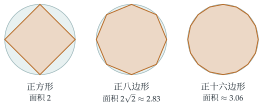

STEP III 2022，第 4 题
继续之前，请先阅读题目（原题为英文）。题目载于 OCR 提供下载的 2022 年 STEP 试卷（zip 文件）内的 STEP III 试卷： www.ocr.org.uk/Images/696587-2022-past-papers.zip
引子
这道题的最后一行，是数学中最优美的公式之一，也是同类公式中最古老的一条。它由法国律师兼数学家韦达（François Viète）于 1593 年发表，是历史上第一次有人把 \(\pi\) 准确地写成一个无穷过程的结果。在韦达之前，\(\pi\) 只能求近似值；在他之后，它可以用一条公式来定义，只要一直算下去，就能得出每一个数位。
这条公式看来很神秘：一层套一层的 \(2\) 的平方根，即嵌套平方根（nested square roots），究竟从何而来？这道题揭示，它其实来自反复运用倍角公式（double-angle formula），而且同一套方法还顺道得出另一条名气较小的公式，是关于 \(\ln 2\) 的。
动笔之前
\(\sinh\) 的倍角公式是甚么？（如果不肯定，可把 \(\sinh 2y\) 和 \(\sinh y \cosh y\) 用指数函数写出来，再作比较。）
\(\sinh 2y = 2\sinh y\cosh y\)，与 \(\sin 2y = 2\sin y\cos y\) 完全一样。整道题就是靠反复运用这一条恒等式（identity）来推动的。题目一直使用双曲函数（hyperbolic functions），到最后一部分我们才转用普通的三角函数。
逐步解题
阶段 1 反复减半
\(n = 1\) 的情况就是取 \(y = x/2\) 的倍角公式： \[\sinh x = 2\cosh\left(\frac{x}{2}\right)\sinh\left(\frac{x}{2}\right).\]
假设公式对 \(n\) 成立。最后一个因子是 \(\sinh(x/2^n)\)。怎样改写它，才能得到 \(n + 1\) 时的公式？
对它运用倍角公式：\(\sinh(x/2^n) = 2\cosh(x/2^{n+1})\sinh(x/2^{n+1})\)。代入后得 \[\sinh x = 2^{n+1}\cosh\left(\frac{x}{2}\right)\cdots\cosh\left(\frac{x}{2^n}\right)\cosh\left(\frac{x}{2^{n+1}}\right)\sinh\left(\frac{x}{2^{n+1}}\right),\] 这正是 \(n + 1\) 时的公式。根据归纳法（induction），公式对所有 \(n\) 成立。■
至于随后的推论，先把两边除以 \(x\)，再把两边乘以 \(\dfrac{x/2^n}{\sinh(x/2^n)}\)。在右边，\(2^n \sinh(x/2^n) \cdot \dfrac{x/2^n}{x\,\sinh(x/2^n)} = 1\)，只剩下各个 cosh 项的乘积。■
阶段 2 极限
由级数（series）可知，当 \(y \neq 0\) 时， \[\frac{\sinh y}{y} = 1 + \frac{y^2}{3!} + \frac{y^4}{5!} + \cdots,\] 当 \(y \to 0\) 时它趋向 \(1\)，所以它的倒数 \(y/\sinh y\) 也趋向 \(1\)。（如果想严谨一点：尾部 \(\frac{y^2}{3!} + \frac{y^4}{5!} + \cdots\) 中的每个阶乘都至少是 \(6\)，所以当 \(0 < |y| < 1\) 时，尾部至多是 \(\frac{1}{6}\bigl(y^2 + y^4 + \cdots\bigr) = \frac{y^2}{6(1-y^2)}\)，而这个量趋向 \(0\)。）
现在固定 \(x\)，在第 (i) 部分中令 \(n \to \infty\)。这时 \(y = x/2^n \to 0\)，所以左边趋向 \(\dfrac{\sinh x}{x} \times 1\)。右边是部分积（partial product），因此它也趋向 \(\dfrac{\sinh x}{x}\)。这正是无穷乘积（infinite product）的意思。■
阶段 3 \(\ln 2\) 的公式
取 \(x = \ln 2\)，则 \(e^{x/2} = \sqrt2\)，所以 \[\cosh\left(\frac{x}{2}\right) = \frac{2^{1/2} + 2^{-1/2}}{2} = \frac{2 + 1}{2\sqrt2} = \frac{3}{2\sqrt2}.\] 同样地，\(e^{x/4} = 2^{1/4}\)，所以 \(\cosh(x/4) = \dfrac{2^{1/4} + 2^{-1/4}}{2}\)，把分子和分母同乘以 \(2^{1/4}\)，便得 \(\dfrac{2^{1/2} + 1}{2 \times 2^{1/4}}\)。■
\(\cosh(x/2^k)\) 的一般规律是甚么？把所有分母 \(2 \times 2^{1/2^k}\) 乘在一起，会有甚么结果？
同样的计算显示，对每个 \(k \geq 1\)， \[\cosh\left(\frac{x}{2^k}\right) = \frac{1 + 2^{1/2^{k-1}}}{2} \times 2^{-1/2^k}.\] （当 \(k = 1\) 时，这就是 \(\frac{1 + 2}{2} \times 2^{-1/2} = \frac{3}{2\sqrt2}\)，与前面一致。）对 \(k = 1, 2, 3, \ldots\) 连乘，\(2\) 的各个幂合并成 \(2^{-(1/2 + 1/4 + 1/8 + \cdots)} = 2^{-1}\)，而第一个分数是 \(\frac{1+2}{2} = \frac32\)。所以这个无穷乘积是 \[\frac32 \times \frac12 \times \frac{1 + 2^{1/2}}{2} \times \frac{1 + 2^{1/4}}{2} \times \frac{1 + 2^{1/8}}{2} \cdots.\] 另一边，\(\sinh(\ln 2) = \frac{2 - \frac12}{2} = \frac34\)，所以 \(\dfrac{\sinh x}{x} = \dfrac{3}{4\ln 2}\)。两边的因子 \(\frac34\) 互相约去，剩下 \[\frac{1}{\ln 2} = \frac{1 + 2^{1/2}}{2} \times \frac{1 + 2^{1/4}}{2} \times \frac{1 + 2^{1/8}}{2} \cdots. \qed\]
阶段 4 韦达公式
第 (iv) 部分含有 \(\pi\)，所以它必定来自普通的三角函数，而不是双曲函数。如果把 \(\sinh\) 和 \(\cosh\) 换成 \(\sin\) 和 \(\cos\)，第 (i) 和第 (ii) 部分的一切是否仍然成立？
仍然成立。归纳法只用到倍角公式，而 \(\sin 2y = 2\sin y\cos y\)。极限只用到当 \(y \to 0\) 时 \(\frac{\sin y}{y} \to 1\)，这可以用同样的方法由 \(\sin y = y - \frac{y^3}{3!} + \cdots\) 推出。所以当 \(x \neq 0\)（并且 \(x\) 不是 \(\pi\) 的倍数，以确保过程中没有因子为零）时， \[\frac{\sin x}{x} = \cos\left(\frac{x}{2}\right)\cos\left(\frac{x}{4}\right)\cos\left(\frac{x}{8}\right)\cdots.\]
选取 \(x\) 使左边等于 \(2/\pi\)，然后算出最初几个因子。半角公式（half-angle formula）\(\cos\frac{\theta}{2} = \sqrt{\frac{1 + \cos\theta}{2}}\)（适用于 \(0 \leq \theta \leq \pi\)）会派上用场。
取 \(x = \frac{\pi}{2}\)。这时 \(\frac{\sin x}{x} = \frac{1}{\pi/2} = \frac{2}{\pi}\)，而各因子是 \(\cos\frac\pi4, \cos\frac\pi8, \cos\frac{\pi}{16}, \ldots\)。第一个是 \(\cos\frac\pi4 = \frac{\sqrt2}{2}\)。如果某个因子是 \(\cos\theta = \frac{c}{2}\)，由半角公式可知下一个因子是 \[\cos\frac{\theta}{2} = \sqrt{\frac{1 + c/2}{2}} = \frac{\sqrt{2 + c}}{2}.\] 所以分子依次是 \(\sqrt2\)、\(\sqrt{2 + \sqrt2}\)、\(\sqrt{2 + \sqrt{2 + \sqrt2}}\)、…，每一个都是把前一个加上 \(2\) 再开平方而得。这就是韦达公式。■
回顾
乘积的相消（telescoping）。第 (i) 部分的恒等式是一个会收拢的乘积，正如某些和式可以裂项相消一样。
先有有限的恒等式，再取极限。与 第 2.4 节 一样，每一步对有限的 \(n\) 都是准确的，唯一需要的极限就是非常简单的 \(\frac{\sin y}{y} \to 1\)。
双曲函数与圆函数是孪生兄弟。同一个证明对两者都适用，因为两者满足相同的倍角公式和相同的小角极限。这并非巧合：\(\cosh(\mathrm{i}x) = \cos x\)，你会在 第 5.7 节 看到。
背后的数学
韦达公式有一个几何意义，可追溯至阿基米德。内接（inscribed）于半径为 \(1\) 的圆的正 \(2^n\) 边形，面积是 \(A_n = 2^{n-1}\sin\frac{2\pi}{2^n}\)。把边数加倍，面积就乘以 \[\frac{A_{n+1}}{A_n} = \frac{2^n \sin(\pi/2^n)}{2^{n-1}\cdot 2\sin(\pi/2^n)\cos(\pi/2^n)} = \frac{1}{\cos(\pi/2^n)}.\] 由正方形（\(A_2 = 2\)）开始，不断把边数加倍，面积便趋向圆的面积 \(\pi\)。所以 \(\pi = 2 \div \bigl(\cos\frac\pi4 \cos\frac\pi8 \cos\frac{\pi}{16}\cdots\bigr)\)，这正是韦达公式。乘积中的每个因子，都是图 2.5.1 中相邻两个多边形的面积之比。

无穷乘积
韦达乘积是数学史上第一个无穷乘积。其后陆续有其他例子：沃利斯（John Wallis）在 1655 年发现 \(\frac{\pi}{2} = \frac{2}{1}\cdot\frac{2}{3}\cdot\frac{4}{3}\cdot\frac{4}{5}\cdot\frac{6}{5}\cdot\frac{6}{7}\cdots\)，而欧拉（Euler）关于 \(\frac{\sin x}{x}\) 的乘积已在 第 2.4 节 出现过。到了大学，你会学到无穷乘积在甚么情况下收敛（converge）。粗略地说，当 \(\prod(1 + a_n)\) 中的 \(a_n\) 是细小的正数时，它的表现与 \(\sum a_n\) 相似，因为 \(\ln(1 + a_n) \approx a_n\)。这里 \(1 - \cos(\pi/2^n) \approx \frac12(\pi/2^n)^2\)，每次缩小 \(4\) 倍，所以这个乘积收敛得很快。
有多快？
乘了 \(n\) 个因子之后，部分积恰好等于 \(\dfrac{1}{2^n\sin(\pi/2^{n+1})}\)，其误差大约是 \(\frac{\pi^2}{6 \cdot 4^{n+1}}\) 乘以 \(\frac2\pi\)。每多一个因子，答案的准确度大约提高 \(4\) 倍，即多得大约 \(0.6\) 个小数位。十个因子可使 \(2/\pi\) 准确至六个小数位。这已经不错，但远远不及 第 2.6 节 的方法那么快，那些方法每一步都令准确的位数加倍。
思维技巧
一条把 \(f(x)\) 与 \(f(x/2)\) 联系起来的恒等式，可以一次又一次地运用；取极限之后，结果往往是一个无穷和或无穷乘积。
找出 \(n\) 步之后的“余项”（这里是 \(2^n\sinh(x/2^n)\)），然后另行求出它的极限。这个模式在分析学中随处可见，由无穷乘积以至分形（fractals）的构造都有它的踪影。
延伸练习
1990 年的版本。试做 STEP I 1990，第 8 题。它循一条与本节不同的途径得出韦达乘积，所用的不外乎 \(\sin\) 的倍角公式。你觉得哪一种方法较为自然？
另一个角。在 \(\frac{\sin x}{x}\) 的乘积中取 \(x = \frac{\pi}{3}\)，把 \(\frac{3\sqrt3}{2\pi}\) 写成无穷乘积，并化简最初两个因子。
要多少个因子？用计算机找出韦达乘积需要多少个因子，才能使 \(\pi\) 准确至 \(4\) 个小数位。解释为甚么每多一个因子大约多得 \(0.6\) 个数位。
\(\ln 3\) 的公式。取 \(x = \ln 3\) 重做第 (iii) 部分，把 \(\frac{1}{\ln 3}\) 写成无穷乘积。需要多少个因子才能使 \(\frac{1}{\ln 3}\) 准确至两个小数位？为甚么这个乘积收敛得比韦达乘积慢？
延伸阅读
Petr Beckmann, A History of \(\pi\)（St Martin’s Press）。阿基米德、韦达、沃利斯等人的故事，写得兴味盎然。
Jonathan Borwein & Peter Borwein, Pi and the AGM（Wiley）。关于计算 \(\pi\) 的严谨数学，包括 第 2.6 节 的方法。读完本章之后，第 1 章应该读得懂。
Eli Maor, Trigonometric Delights（Princeton University Press）。书中有一章专门讲述韦达和他的乘积。